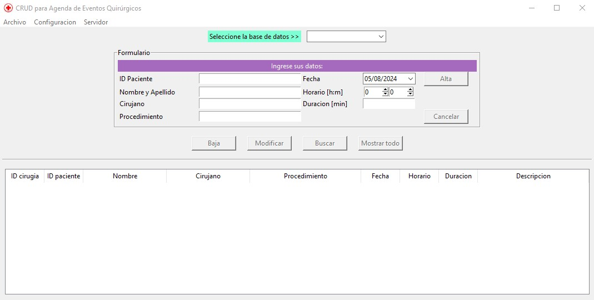

Bienvenido a la documentación de Proyecto_final-UTN!
Este proyecto se basa en el desarrollo de un CRUD para agenda de Eventos Quirúrgicos, como trabajo final de la Diplomatura de Pyhton.
Alumno: Cynthia Auad
Profesor: Juan Barreto
Objetivos
Diseño e implementación de un sistema CRUD para gestionar la información de la agenda de eventos quirúrgicos, utilizando el patrón MVC y Programación Orientada a Objetos (POO).
Integración de una base de datos para almacenar y recuperar los datos relacionados con los eventos quirúrgicos.
Desarrollo de una interfaz de usuario intuitiva y fácil de usar para acceder y administrar la agenda de eventos quirúrgicos.
Validación de campos utilizando el patrón regex.
Trabajo con excepciones.
Implementación de un registro de log, a traves del uso de decoradores.
Implementación del Patrón Observador, para registrar algunos eventos.
Implementación de un servicio cliente-servidor, utilizando Sockets
Lenguaje y librerías
Este proyecto se desarrola en Python 3.10 y se utilizan las siguientes librerías.
Sqlite3
Tkinter
Peewee v.3.17.3
La GUI está desarrollada en Tkinter. Se muestra captura de pantalla de la app.
Nota
La app requiere seleccionar la base de datos deseada. Actualmente, y con fines del trabajo final, se seteo por defecto Sqlite3.
Contenidos:
- Instalación
- controller module
- vista module
VistaVista.actualizar_treeview()Vista.cancelar()Vista.color()Vista.limpiar_entry()Vista.limpiar_treeview()Vista.obtener_seleccion()Vista.stop_server()Vista.try_connection()Vista.vista_alta()Vista.vista_borrar()Vista.vista_consulta()Vista.vista_export()Vista.vista_guardar()Vista.vista_modificar()
- model module
- connector module
- valid module
- decoradores module
- observador_model module
- observador_vista module
- server module
- client module
Nota
La consulta mediante socket está armada para consultar los eventos DEL DIA que registran los dos observadores implementados.
Para que la consulta devuelva información, por ejemplo seleccionar la base de datos antes de ejecutar el client.py
Tambíen se puede realizar una Alta o Baja y será mostrado por el cliente en la opción 2. Leer el README.txt